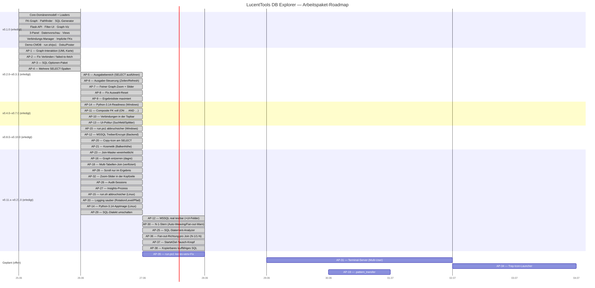

Roadmap¶
Phasen-Timeline¶

Offene Arbeitspakete¶
- AP-19 —
.pattern_transfer: projektlokale Pattern sammeln und global zusammenführen - AP-31 — Terminal-Server-Tauglichkeit (Multi-User). Kern erledigt v0.33.0
(dynamischer Port + Pro-Nutzer-
config.json/Logs/), waitress-WSGI-Server erledigt v0.35.0; offen: Idle-Shutdown/sauberer Stop, Deployment-Packaging - AP-34 — Tray-Icon-Launcher. Kern erledigt v0.34.0 (Ein-Klick-Start, Tray-Menü, Auto-Browser, sauberes Beenden); offen: Log-Fenster + Verknüpfungs-Ausrollen
- AP-35 —
run.ps1: leeres venv gilt fälschlich als „vollständig" (Folgefund aus AP-15; Fix wie inrun.sh, signiertes Skript → eigene Windows-Session)
Legacy-DB-Migration / Reverse-Engineering (Konzept: Legacy-DB-Migration-Tooling)¶
Werkzeug-Block für die Ablösung einer Alt-Automatisierung (Reverse-Engineering der Alt-DBs → sauberer, referenziell konsistenter Export → Überführung in ein neues Modell). Kernerkenntnis: produkt-übergreifende Links der Alt-Suite sind fachliche IDs, keine FKs — daher ist nicht „Cross-Schema-Join" der Hebel, sondern implied-FK-Erkennung + referenziell konsistentes Subsetting.
- AP-56 — Entitäts-Hülle / Subset-Export: transitive FK-Closure (Eltern + Kinder, rekursiv, Zyklus-/Tiefenschutz) als read-only Export-SELECT-Sequenz (SQL/CSV/JSON). Größter Migrationsnutzen. Aufwand L.
- AP-57 — Cross-Schema-Joins (volle Stufe), zurückgestellt/bedingt: Multi-Schema-Reflection + per-Tabelle-Schema-Qualifizierung in einem Join-SELECT. Nur bauen, wenn AP-54 echte Cross-Schema-FKs nachweist. Datenmodell-Umbau quer durch Model/Loader/Graph/Pathfinder/sqlgen/UI. Aufwand XL.
Weitere DB-Objekt-Kategorien — AP-63 (gestuft, Konzept: Sidebar-Objekt-Kategorien)¶
Über Tabellen/Views hinaus weitere SQL-Objekte read-only reflektieren und anzeigen (nehmen nicht an Join-Pfaden teil — informativ). Gestuft nach Reflektions-Mechanismus + Testbarkeit:
- AP-63 · Stufe 1 — Tabellen-Detail anreichern: vollständige Indizes + Check-Constraints (genestet, keine Sidebar-Kategorie). SQLAlchemy-nativ, SQLite-CI-testbar. Aufwand S.
- AP-63 · Stufe 2 — neue Sidebar-Kategorien Sequences, Materialized Views, Triggers (etabliert das Kategorie-Muster; Triggers SQLite-testbar, Sequences/Mat-Views nur gegen PostgreSQL). Aufwand M.
- AP-63 · Stufe 3 — Stored Procedures + Functions (+ Oracle Packages, Synonyms) via Pro-Dialekt-Katalog-SQL, Detail mit Quelltext. Nur live testbar (PG/Oracle/MSSQL). Aufwand L.
Verbindungs-UX & Demo-Daten¶
- AP-61 — Demo-CMDB zur vollen CMDB erweitern: die Demo ist aktuell ein vSphere-Virtualisierungs-Inventar (Datacenter/Cluster/Host/VM/Datastore/Network/…); es fehlt die CMDB-/Business-Schicht. Ergänzen (mit FKs zur Infra): Application, Service, Owner/Person, Vendor, Contract, Location (Rack/Raum), Software/License, Asset-Status — in
sample_data/build_demo_db.py+ Beispiel-Daten. Umfang offen: CMDB-Schicht (empfohlen) / + ITSM (Incident/Change) / minimal (Application+Service+Owner). Aufwand M–L. - AP-62 — Sichere Passwort-Persistenz (OS-Keyring), bedingt: das Passwort wird heute bewusst nie gespeichert (Whitelist
routes.py:_CONN_FIELDSohnepassword; Verbindungen liegen als Klartext-JSON). Optionales „Passwort merken" via OS-Keyring (verschlüsselt, neuekeyring-Dependency, plattformübergreifend) statt Klartext. Nur bauen, wenn Persistenz gewünscht — Status quo (jede Sitzung neu eingeben) ist eine valide Sicherheitswahl. Aufwand M.
Erledigte Arbeitspakete¶
v0.1.0 (2026-06-25): Core-Domänenmodell, Loader, FK-Graph, Pathfinder, SQL-Generator, Flask-API, Filter-UI, Graph-Visualisierung, implizite FKs, 3-Panel-Layout, Datenvorschau, Views, Verbindungs-Manager, Demo-CMDB, Doku/AppImage/Projektposter.
v0.2.0 – v0.3.1 (2026-06-26):
- AP-1 — Interaktive Pfad-Auswahl im Graph (Doppelklick → UML-Karte → Sync)
- AP-2 — Fix „Verbinden": klare Meldung statt „failed to fetch"
- AP-3 — SQL-Optionen-Paket (DISTINCT · ORDER BY · LIMIT · IS NULL/IN/BETWEEN)
- AP-4 — Mehrere SELECT-Spalten
- AP-5 — Tabellarischer Ausgabebereich (generiertes SELECT ausführen) — v0.2.0
- AP-6 — Ausgabe-Steuerung: Zeilen-Auswahl (200/400/Alle) + „Aktualisieren" — v0.3.0
- AP-7 — Feiner Graph-Zoom + Zoom-Slider mit %-Anzeige — v0.3.0
- AP-8 — Fix „Auswahl zurücksetzen" (Pfad-Highlight + UML-Karten leeren) — v0.3.0
- AP-9 — Ergebnisliste unter dem SQL-Builder maximiert (voller Platz nach unten) — v0.3.1
v0.4.0 – v0.16.0 (2026-06-26 … 27):
- AP-14 — Python-3.14-Readiness, Windows-Pfad (Wheelhouse cp312 → cp314) — v0.4.0
- AP-11 — Composite Foreign Keys voll unterstützt (
ON … AND …) — v0.5.0 - AP-10 — Gespeicherte Verbindungen in der Topbar (Dropdown + Direkt-Connect) — v0.6.0
- AP-13 — UI-Politur (Suchfeld · linker Splitter · „Neu anordnen") — v0.7.0
- AP-15 (Teil 1, Windows) —
run.ps1abbruchsicher + idempotent — v0.8.0 - AP-12 — MSSQL: ODBC Driver 18 + Encrypt/Trust, klare Treiber-Fehlermeldung (Backend) — v0.9.0
- AP-20 — Copy-Icon am generierten SELECT — v0.10.0
- AP-21 — Kosmetik: gleiche Höhe Schema-Graph-Balken & Tab-Linie — v0.10.0
- AP-16 — Graph entzerren: dagre (Sugiyama), minimale Linienkreuzungen — v0.11.0
- AP-18 — Verknüpfen mehrerer Tabellen (Status geprüft: voll implementiert) — v0.11.0
- AP-23 — SQL-Builder-Maske vereinheitlicht — v0.11.0
- AP-26 — Audit-Sessions: Prozess + Checkliste — v0.11.0
- AP-28 — Fix: SQL-Builder-Contentbereich scrollt nicht mehr — v0.11.1
- Server-Deployment-Fixes (PowerShell 5.1: ASCII+BOM, Start-Abbruch, Debug) — v0.11.1–v0.11.3
- AP-32 — Zoom-%-Slider waagerecht in die Graph-Kopfzeile — v0.11.2
- AP-27 — Insights: Ort & Einbindung geklärt — v0.11.2
- AP-15 (Teil 2, Linux) —
run.shabbruchsicher + idempotent — v0.12.0 - AP-33 — Logging sauber (Rotation · konfig. Level/Pfad · Request-Logging) — v0.13.0
- AP-14 (Teil 2, Linux) — Python-3.14-AppImage + AppRun-Update-/Browser-Fix — v0.14.0
- AP-29 — SQL-Dialekt umschalten (Quoting + LIMIT/TOP/FETCH je Dialekt) — v0.15.0
- AP-12 (Abschluss) — MSSQL real getestet (ODBC 18 + Integrationstest) + UI-Felder Encrypt/Trust — v0.16.0
- AP-30 — N-1-Stern: Auto-Weaving der Select-/ORDER-BY-/Filter-Tabellen in den Join-Baum; stilles Verwerfen entfällt; 1-N-Äste lösen nicht-blockierende Fan-out-Warnung aus — v0.17.0
- AP-25 — SQL-Statement-Analyzer: neuer Tab parst via sqlglot (lokal, kein CDN), zeigt Typ/Tabellen/Warnungen (WRITE_STATEMENT/NO_WHERE/CARTESIAN_JOIN; mit Verbindung UNKNOWN_TABLE/UNKNOWN_COLUMN), markiert beteiligte Tabellen im Graphen; funktioniert mit und ohne Verbindung — v0.18.0
- AP-36 — Fan-out-Richtung pro Join sichtbar: jeder Join-Schritt trägt einen Richtungs-Chip (grün N-1 / gelb 1-N) in der Pfad-Liste und als Kantenlabel im Graph;
/api/joinpathliefert einsteps-Feld; neue Referenzseite „Fan-out-Warnung (1-N)" — v0.19.0 - AP-37 — Start ⇄ Ziel tauschen: ⇄-Knopf neben den Ziel-Dropdowns (vertauscht Tabelle+Spalte, spiegelt Graph-Marker, baut neu); Fan-out-Doku um Beispiel 3 (verkürzen oder filtern) erweitert — v0.20.0
- AP-38 — Kopierbares, lauffähiges SQL: Anzeige/Copy setzen Filterwerte als Literale ein (dialekt-/typbewusst),
:p0bleibt intern für die read-only-Ausführung;/api/joinpathliefertsql+sql_inline— v0.21.0 - AP-39 — SQL-Analyzer vertieft: Struktur-/Klauselanalyse (Spalten, Joins+ON, WHERE-Filter, GROUP/HAVING, ORDER BY, DISTINCT/LIMIT), Struktur-Zähler + Komplexitäts-Score (A–E), JOIN-Kanten im Graph gezeichnet, statische Lints (SELECT *, LIKE '%…', Funktion-auf-Spalte) — read-only — v0.22.0
- AP-40 — Graph-Legende (Farb-/Marker-Erklärung) + Fix: Join-Pfad- und Analyzer-Markierungen wechselseitig exklusiv (blaue Spur verschwindet beim Join-Bauen) — v0.23.0
- AP-41 — Join-Typ pro Schritt (INNER/LEFT/RIGHT/FULL) im SQL-Builder;
join_typesin sqlgen/API; Fix Start/Ziel-Einfärbung (grün/rot) passend zur Legende — v0.24.0 - AP-42 — SQL-Builder-Politur: verbose Fan-out-Warntext raus → kompakte 1-N-Kachel; SQL-Fenster bricht um statt H-Scroll (Copy/Paste bleibt lauffähig); Ziel-Knoten amber statt rot — v0.24.1–v0.25.0
- AP-43 — Lesbares SQL-Layout: mehrzeilig (eine Spalte/JOIN/ON-Bedingung pro Zeile,
=ausgerichtet bei Composite-Keys), Copy endet mit;— v0.26.0 - AP-44 — SQL-Builder kompakter (Button-Zeilen zusammengelegt, 1-N-Kachel oben rechts, mehr Tabellenhöhe) + Ergebnis-Hilfen: NULL-Hervorhebung, Statuszeile Zeilen·Join-Typ·Fan-out — v0.27.0
- AP-46 — Detailkarten folgen der SQL-Builder-Auswahl: Graph zentriert wenn leer, sonst nach oben + Start/Ziel-Karten darunter (auch bei Dropdown-Auswahl) — v0.28.0–v0.28.1
- AP-47 — Pfad-Auswahl-Indikator
[*]/[ ]statt Bullets + count-basierter Waisen-Chip pro Join-Typ (/api/orphan_check, pfad-kontextbewusst) — v0.29.0–v0.29.1 - AP-48 — SQL-Analyzer: Eingabe-Textbox größer + nur vertikal verstellbar; Tippfehler-Lint
SUSPICIOUS_ALIAS(Alias ähnelt Join-Schlüsselwort) — v0.30.0 - AP-49 — Analyzer-Feinschliff: größere Default-Textbox + read-only-Badge; Fix: ANSI-Codes aus Parsefehler entfernt, mehrzeiliges Fehler-Layout — v0.31.0
- AP-45 — Ergebnis-Hilfen Teil 2: klickbare Spaltenköpfe in der Ergebnistabelle (Menü: Sortieren ASC/DESC, Als Filter, Spalte entfernen — Start/Ziel-Anker geschützt) + Filter-Wertfeld mit echten DISTINCT-Werten (neues read-only Endpoint
/api/distinct);/api/joinpath/runliefertcolumns_metafür eindeutiges Spalten-Mapping (auch bei gleichnamigen Spalten) — v0.32.0 - AP-34 (Kern) — Tray-Icon-Launcher (Python/pystray): Ein-Klick-Start über
run.ps1 -Action tray/run.sh --tray(automatischer venv-Bootstrap), fensterloser Tray mit Menü Im-Browser-öffnen/Info/Beenden, Auto-Browser, sauberes Beenden (Port frei);launcher/core.pystdlib-only + getestet — v0.34.0 (Log-Fenster/Verknüpfungs-Ausrollen offen) - AP-31 (Kern) — Multi-User-Basis: dynamischer Port pro Session (5057 bevorzugt, sonst frei;
LUCENT_PORT-Override) + Pro-Nutzer-config.json/Logs/(SlugluDBxP, XDG/%LOCALAPPDATA%); neuescore/userpaths.py, einmalige Migration, URL-Ausgabe, Launcher ohne Port-Abbruch — v0.33.0 (Rest: Idle-Shutdown/Deployment offen; waitress erledigt v0.35.0) - AP-22 — Implizite FKs: Default geklärt → bleibt opt-in (Entscheidung)
- AP-24 — Session-KPIs: erhoben & dev-intern dokumentiert (
session-kennzahlen.md) (Entscheidung)
v0.35.0 – v0.38.0 (2026-06-27 – 2026-06-28):
- AP-31 (Rest, Scheibe 1) — produktiver WSGI-Server: Normalbetrieb läuft auf waitress;
--debugbehält den Werkzeug-Dev-Server mit Auto-Reload — v0.35.0 - AP-50 — Unique-Constraints → korrekte Fan-out-Klassifikation: absteigende FK mit eindeutiger Kind-Spalte (UNIQUE/PK) gilt als 1-1 statt 1-N (keine falsche Fan-out-Warnung) — v0.36.0
- AP-51 — Unique-Index als zusätzliche Uniqueness-Quelle (voll-spaltig, nicht-partiell); partielle/Expression-Indizes bewusst ausgeschlossen — v0.37.0
- AP-52 — Multi-Schema-Reflection: ein wählbares Schema (
/api/schemas, schema-qualifizierte SQLschema.table); Model/Graph/Pathfinder unverändert — v0.38.0
v0.39.0 (2026-06-28):
- AP-53 — Oracle-Verbindung: Verbinden/Reflektieren via python-oracledb (Thin-Mode, kein Instant Client), Adressierung per Service-Name; System-Schemas im Schema-Wähler gefiltert; skip-guarded Live-Integrationstest (
LUCENT_ORACLE_TEST_URL) — v0.39.0
v0.40.0 (2026-06-28):
- Tier-2 — Tabellen-/Spaltenkommentare: Kommentare werden bei der Schema-Reflection gelesen (via SQLAlchemy) und im UI als Hover-Tooltip angezeigt — in der Detail-Spaltenliste und auf UML-Karten. Generiertes SQL unverändert; kein neues Core-Modul, kein neuer Endpoint — v0.40.0
v0.41.0 (2026-06-28):
- Tier-3 — GROUP BY / Aggregatfunktionen: Jede SELECT-Spalte kann eine Aggregatfunktion (COUNT/SUM/AVG/MIN/MAX) tragen; GROUP BY wird automatisch aus den nicht-aggregierten Spalten abgeleitet. Generiertes SQL erhält eine GROUP BY-Klausel; die read-only-Ausführung führt gruppierte Abfragen aus. Änderungen in
core/sqlgen.py,web/routes.py,web/static/js/app.js; kein neues Core-Modul, kein neuer Endpoint. Noch offen: HAVING, COUNT(*)/COUNT(DISTINCT), Cross-Schema-Joins — v0.41.0
v0.42.0 (2026-06-28):
- Aggregat-Operationen — HAVING + ORDER BY auf Aggregaten: ORDER BY kann nun nach einem Aggregat sortieren (z. B.
ORDER BY COUNT(...) DESC); eine neue HAVING-Klausel filtert Gruppen nach einem Aggregat (skalarer Vergleich= != < > <= >=, parametrisierter Wert). Klauselreihenfolge: WHERE → GROUP BY → HAVING → ORDER BY → LIMIT. Die read-only-Ausführung wertet HAVING aus. Kein neues Core-Modul, kein neuer Endpoint; Änderungen incore/sqlgen.py,web/routes.py,web/static/js/app.js. Noch offen: COUNT(*)/COUNT(DISTINCT), Cross-Schema-Joins — v0.42.0
v0.43.0 (2026-06-28):
- COUNT(*) + COUNT(DISTINCT): zwei neue Aggregat-Optionen. COUNT(*) zählt Zeilen pro Gruppe (Spalte wird ignoriert; die zugehörige Tabelle wird dennoch in den Join eingebunden). COUNT(DISTINCT Spalte) zählt eindeutige Werte. Beide Optionen funktionieren in SELECT, HAVING und ORDER BY. Kein neues Core-Modul, kein neuer Endpoint; Änderungen in
core/sqlgen.pyundweb/static/js/app.js. Noch offen: Cross-Schema-Joins — v0.43.0
v0.43.1 (2026-06-28):
- Fix GROUP-BY-Ableitung: GROUP BY wird jetzt auch aus Aggregaten in HAVING/ORDER BY abgeleitet, nicht nur aus der SELECT-Liste — vorher erzeugte ein Aggregat allein in HAVING/ORDER BY (bei nicht-aggregierter SELECT-Spalte) GROUP-BY-loses, in strikten DBs ungültiges SQL. Rückwärtskompatibel. Änderung in
core/sqlgen.py— v0.43.1
v0.43.2 (2026-06-28):
- AP-A — Umbenennung „Join-Builder" → „SQL-Builder" durchgängig im UI (Menü, Tab, Button „Generieren") und in der aktuellen Doku; interne Bezeichner mit umbenannt (
jb-→sb-,jb_→sb_,JB_→SB_,joinbuilder→sqlbuilder). Keine Verhaltensänderung; Endpoint/api/joinpathunverändert — v0.43.2
v0.43.3 (2026-06-28):
- AP-B — SQL-Builder-Layout: die Klausel-Builder sind jetzt vier beschriftete Sektionen (Filter, Sortierung, Spalten, HAVING) mit je eigenem kompaktem „+"-Button; Ausgabe-Optionen (DISTINCT, LIMIT, Dialekt) + „Generieren" in einer getrennten Aktionsleiste unten. Nur Markup/CSS — keine Verhaltensänderung, IDs und erzeugte SQL unverändert — v0.43.3
v0.43.4 (2026-06-28):
- AP-C+D — Join-Typ inline + 1-N-Erklärung in Graph-Legende: die Join-Typ-Dropdowns sitzen inline in der aktiven Kandidatenpfad-Zeile (neben den 1-N/N-1-Richtungs-Chips), die separate Join-Typ-Zeile entfällt; die Fan-out-Erklärung wanderte aus der Builder-Hinweiskachel in die Schema-Graph-Legende. Nur Markup/CSS — keine Verhaltensänderung — v0.43.4
v0.44.0 (2026-06-28):
- AP-E — SQL-Builder Zeilen-Move ↑/↓: ORDER-BY- und Spalten-Zeilen tragen kleine ↑/↓-Buttons (kein Drag & Drop) zum Verschieben innerhalb ihrer Sektion. Da das Formular in DOM-Reihenfolge gelesen wird, ändert das Verschieben die SQL: ORDER BY = Sortier-Priorität, Spalten = SELECT-/GROUP-BY-Reihenfolge; ↑ der ersten / ↓ der letzten Zeile deaktiviert; gestaged (kein Auto-Rebuild). WHERE/HAVING bewusst ohne Move. Zusätzlich Legenden-Fix (1-N linksbündig wie N-1). Nur
web/(JS/CSS) — v0.44.0
v0.45.0 (2026-06-28):
- AP-F — SQL-Analyzer Optimierungs-Vorschläge: neue, von den Warnungen getrennte Kategorie mit vier schema-freien AST-Heuristiken (DISTINCT+GROUP BY redundant, ORDER BY ohne LIMIT, OR im Top-Level-WHERE, Nicht-EXISTS-Unterabfrage in WHERE). Read-only, nur Hinweise — kein Umschreiben; Änderungen in
core/sqlanalyze.py,web/routes.py,web/static/js/app.js+ CSS — v0.45.0
v0.45.1 (2026-06-28):
- AP-58 — Fix HAVING-Layout: die HAVING-Zeilen fluchten jetzt wie Filter/Sortierung/Spalten (gleiches Flex-Layout, gleiche Einrückung, kleiner quadratischer Löschbutton statt 140px-Kasten). HAVING (v0.42.0) entstand vor dem AP-B-Layout und hatte kein eigenes CSS. Nur CSS — v0.45.1
v0.45.2 (2026-06-28):
- AP-59 — SQL-Builder 2-Spalten-Raster: die Klausel-Sektionen werden zu „+ Label"-Buttons in der linken Spalte (erste Zeile auf gleicher Linie); alle Felder fluchten mit Start/Ziel, eine Kopfzeile je Sektion gespart. Nur Markup/CSS — v0.45.2
v0.45.3 (2026-06-28):
- AP-60 — Connection-Form sauber ausgerichtet: feste Label-Spaltenbreite (lange Labels wie „Server-Zertifikat vertrauen" brechen innerhalb der Spalte um, statt das Feld zu verschieben) + einheitliche Feld-Breite → alle Felder fluchten über SQLite/PG/MySQL/MSSQL/Oracle. Nur CSS — v0.45.3
v0.47.0 (2026-06-28):
- AP-55 — Implied-FK-Schärfung:
core/implied.pyerkennt jetzt zusätzlich Suffix→Tabellenname-Matches (Groß/Klein-, Trenner-, Plural-normalisiert) mit konventionellem Ziel-PK; jeder Treffer trägt eine Confidence-Stufe (hoch/mittel/niedrig) + Begründung,/api/schemaliefert sie, das Info-Panel zeigt Count + Liste mit Badge. Cross-Schema bleibt zurückgestellt. Aufwand M — v0.47.0
v0.46.0 (2026-06-28):
- AP-54 — Cross-Schema-FK-Diagnose (read-only):
referred_schemains Model getragen,Schema.cross_schema_fks()leitet die Cross-Schema-Kanten ab,/api/schemaliefert sie, das Info/Übersicht-Panel zeigt Count + Kantenliste. Entscheidungs-Gate für AP-57; keine SQL-Änderung — v0.46.0
AP-17 (Delivery-Verzeichnis) wurde gestrichen — Auslieferung läuft über GitHub-Releases.
Vollständige Liste in todo-erledigt.md; detaillierter Stand:
Changelog.